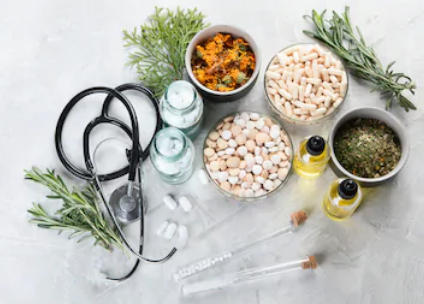
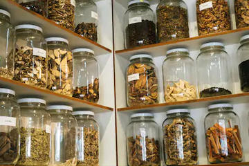

What is Herbal Medicine?
Many modern medicines have their origins in plant medicines but only the isolated active constituent is used. Phytotherapy maintains that it is the vast array of constituents in a plant that work synergistically to restore the balance of the body, and to mobilise the body’s innate healing powers.
For example, the anti-inflammatory chemical Aspirin (acetylsalicylic acid) was derived from salicylic acid, a constituent initially isolated from plants such as Filipendula ulmaria (meadowsweet) and Salix alba (willow bark). In its isolated form salicylic acid irritates the stomach lining, but when it is consumed as whole plant extract, the constituents act together to reduce inflammation without causing irritation to the digestive tract.
Phytotherapists only prescribe whole plant extracts, based on the principle that the whole plant contains a perfect balance of therapeutic chemical constituents. The prescription is tailored to suit the individual.
Phytotherapists prescribe herbs in the form of:
- Teas (whole dried herbs)
- Tablets (powdered dried herbs)
- Tinctures (alcoholic extracts of whole plants)
- Creams (herbally infused vegetable based carrier cream)
- Ointments (herbally infused beeswax based)
- Oils (infused with herbs)
- Gels (aloe gel based)


How do herbs work?
Each herb is unique; it is composed of a distinctive combination of different active constituents, and as such has its own identity.
- The constituents work synergistically within the human body to achieve the herb’s specific action.
- They may include nutrients as well as chemically active substances, which makes herbal medicine unique in its action of simultaneously nourishing and healing the body.- Herbs are chosen by the Phytotherapist to suit the individual.
- Potent medicinal substances have the potential to harm as well as heal. It is important, therefore, to avoid self-medicating and always to seek professional individualised herbal treatment from a registered Phytotherapist.
- During the course of treatment, the prescription may be altered according to the body’s changing requirements.